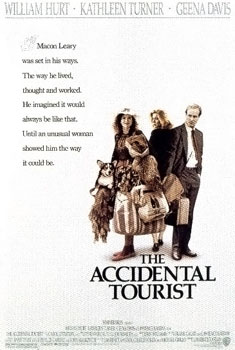

Lawrence Kasdan
1988
121 minutes
This is a romantic dramedy starring William Hurt and Geena Davis and Kathleen Turner and Bill Paxton and/or Bill Pullman. It's set in Baltimore, so naturally it's going to be full of homicides and life on the street and selling dope and aother sorts of hood drama. Geena Davis is a disgraced veterinarian who has taken to selling pet tranquilizers at the local diner. William Hurt is a Jewish travel writer who sells aluminum siding and formstone door-to-door. Bill Paxton and Bill Pullman are twin brothers who are both corrupt police officers. Aside from their lucrative business shaking down junkies and foot fetishists, they also engage in incest and eat dog shit and cut holes in the bottoms of popcorn boxes at the local adult theater. Kathleen Turner plays William Hurt's ex-wife, who is slumming it for this role, nearly unrecognizable in a fat suit, heavy makeup, and a beehive hairdo. She spends most of the movie in a crib eating hard boiled eggs and whining about how awful heterosexual men are. There's also a subplot told in flashbacks to 1962, where Natalie Portman falls in love with a CGI sea creature.
The logo for William Hurt's travel guide is a winged armchair, which symbolizes his crankiness about travel and reluctance to leave home. As you know, this is a natural response to being based in Baltimore, since exposure to other places can disrupt the delicate protective patina that Baltimoreans develop over time that insulates them against the general malaise of empty vacant buildings and aggressive street people and kitten-sized rats. Exposure to fresh air outside the city can also make you lose your tolerance for the general urine smell that pervades the streets, at least when it's not overpowered by the latest ecological disaster that has caused thousands of fish to die and rot in the harbor.
You miss having access to comfortable chairs to sit in, which seemed to be easier to find before the pandemic. You spend a lot of time in one of the three or four busted office chairs that you rotate between in your apartment. You should pare this down to one good chair, but finding the One True Chair has been elusive, and every chair seems to have problems with the upholstery (usually ruined by your cats when they were around) or the hydraulics, which were not meant for a large grown man to spend sixteen hours a day sitting in while working from home during the day and then returning to the same desk to doomscroll social media at night.
Unlike William Hurt's character, who was practically dragged there kicking and screaming, you were more than happy to take a short break from Baltimore--patina be damned--to visit Paris for most of a month last year. You were happy to find most of your seating options there to be superior to what you were sitting on at home, with one tragic exception. On your last day in Paris, you visited a cat cafe that was full of shabby antique chairs that were mostly meant for early twentieth century ladies. The first of these chairs you sat down in collapsed as soon as you shifted your weight. You were horrified and the staff rushed over to apologize, declaring that it wasn't your fault and that they should have retired that chair sooner. Luckily no cats were injured in this disaster, and they brought you a sturdier chair with better cushioning to sit in. You were a bit shaken, but soon comforted by a purring cat brushing against your legs and begging to be petted.
It occurs to you how terrible an idea it would be for a cat cafe to have a Twister night...
Time to choose something different: